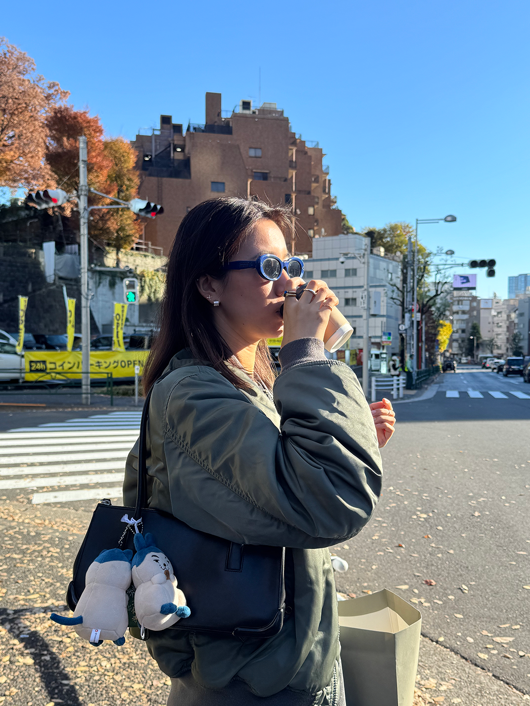
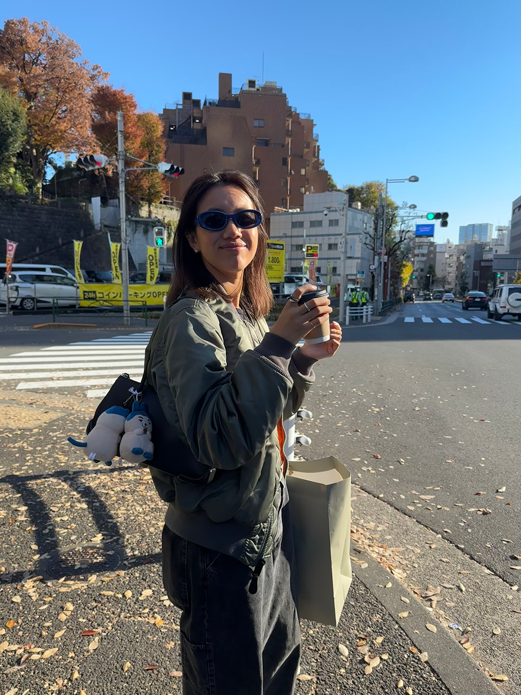

About ME
Architectural designer working across education, cultural projects, and professional practice between New York, Shanghai, and Tokyo.


1996
Born in Shanghai, China
2015
2020
Pratt Institute, Bachelor of Architecture
New York City
2022
Kengo Kuma and Associates
Shanghai
2024
MakeHouse
Tokyo
Present
Tange Associates
Tokyo
Where to next...?